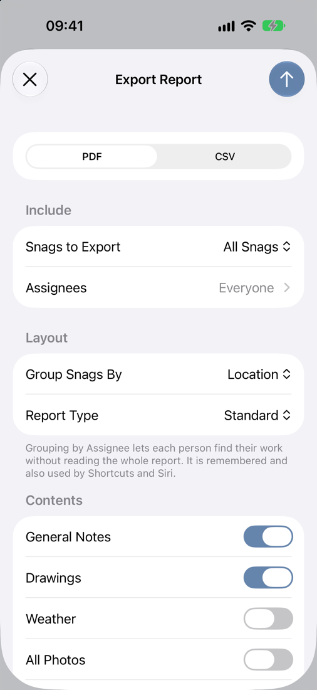

Reports and Export
Snaglite creates professional PDF reports from your inspection, or a CSV spreadsheet of the same snags. Reports are created on your device and can be shared, emailed, printed or saved to Files.
Before exporting, check that:
- the site, unit and location details are correct
- snag titles and notes are clear and complete
- photos are attached and markup is legible
- statuses and priorities are up to date
- your company name, logo and inspector name are set in Settings
Where to export from
| To report on… | Go to |
|---|---|
| One unit | Open the unit, then ⋯ → Export Report. Or press and hold the unit and choose Export PDF. |
| Several units at once | On the Units screen, ⋯ → Select, choose the units, then ⋯ → Export Reports. You get one PDF per unit. |
| One location | Open the location, then ⋯ → Export All Snags. |
| Specific snags | In any snag list, ⋯ → Select, choose the snags, then ⋯ → Export Selected. |
| Automatically | Use the Create Inspection Reports action in Shortcuts. See Siri, Shortcuts and Widgets. |
Export options
The Export Report sheet has four parts.
Format
PDF for a full report, or CSV for a spreadsheet (see below).
Include
- Snags to Export – All Snags, Open Snags or Closed Snags.
- Assignees – choose one or more people to export only their snags. Leave everything off to include everyone.
Layout
- Group Snags By – Location or Assignee. Grouping by assignee lets each person find their work without reading the whole report. Your choice is remembered, and Shortcuts uses it too.
- Report Type – Standard, Back Snag or Custom (see below).
Contents
- General Notes – include the unit’s General Notes.
- Drawings – add a page for each drawing sheet with pinned snags.
- Weather – add the weather at the site on the inspection date, for example “Light rain, 11°C–14°C, wind up to 18 km/h”. Where photos were taken that day, it covers the hours you were on site. It needs an internet connection, a site address and an inspection date that is not in the future.
- All Photos – show up to three photos per snag, with the Primary photo largest. When off, each snag shows its Primary photo only.
- Crop Photos to Square – neater, consistent photos. This only affects the PDF. Your original photos are unchanged.
Tap the ↑ button to create the report, then choose where to send or save it.

Report types
| Type | Use it for |
|---|---|
| Standard | An Inspection Report – the usual snagging report. |
| Back Snag | A Back Snag Inspection Report, for a return visit to check work has been completed. |
| Custom | Your own report title, such as “End of Defects Period Inspection”. Set the title in Settings → Reports → Custom Report Title (up to 100 characters). |
What the PDF contains
- Cover page – report title, unit, your company name and logo, reference, client, contractor, address, inspector, inspection date, and an executive summary with total, open and closed snags by location and by assignee.
- General notes – formatted as they are in the app, if you included them.
- Drawing pages – each sheet with its numbered pins, if you included drawings.
- Snag schedule – every snag as a numbered card with its title, notes, priority, status, assignee, last updated date, photos and a Done tick box for whoever fixes it. Long cards continue onto the next page.
Files are named automatically using the unit name, report type and export date, for example Block_A_Inspection_Report_28_10_2026.pdf.
CSV export
Choose CSV in Format to export the same snags as a spreadsheet, numbered as they are in the PDF. It has columns for number, site, unit, location, title, notes, status, priority, assignee, last updated and photo count. It is text only, so photos are counted but not included. Open it in Numbers, Excel or Google Sheets, or import it into another system.
Good report preparation
- Keep snag titles factual and specific
- Check that marked-up photos are still easy to read
- Use consistent assignee names
- Make sure statuses reflect the current position
- Open the PDF and check it before you send it outside your company